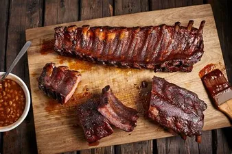

Smoked Baby Back Ribs

This recipe will help you create a wonderful and delicious pull pork bbq that can be used to make sandwiches, casorols, and many more.
In this recipe I will be giving you my personal spice rub, but you all are more than welcome to alter it to your liking. I will also make sure to give you the instructions on how to prepare, how to cook, and what you need to do after the cook.
Spice Rub
- 1/2 cup of Paprika
- 1/2 cup of Salt
- 1/2 cup of Sugar
- 1/2 cup of Granulated Garlic
- 1/4 cup of Granulated Onion
- 1/4 cup of Chili
- 1/4 cup of Cumin
- 2 Tablespoons of Fresh Cracked Peppper
- 2 Tablesppons of Dry Mustard
- 1 Tablespoon of Cayenne Pepper
Prep Process, this should be done the day before the cook.
- You want to cover your ribs with a binder, I like to use mustard but other use siracha, hot sauce, ect...
- After putting the binder on make sure to put your spice rub evenly.
- Cover the ribs lightly with plastic wrap and put it in the fridge until cook day.
- Pull the ribs out from the fridge about 1 hour before the cook.
Cook Day
- Choose your choice of wood, I like to use apple, but any classic wood like hickory or mesquite. Don't be afraid to experiment and try other woods out.
- Get your grill up to 250 and place the ribs inside your smoker.
- While your ribs is being smoked grab a spray bottle and make sure its clean and fill it up with some liquids. It can be water, beer, apple juice, or apple cider. You can also do a jack and coke as well. The liquid being sprayed on helps with holding on the smoke.
- When cooking, you want the final temp to be around 200.
- I like to spray about ever 45 mins but after cooking for awhile you will figure out what works best for you.
- For me my ribs usually take me about 4 hours to smoke at 250, I cook 2 hours unwraped, and 2 hours wrapped with aluminium.
- When wraping I add butter, honey, and brown sugar to help tenderize it.
- Once when it reach the 205 temp take it out let it rest for about 30 mins and dig in.
Back to home page